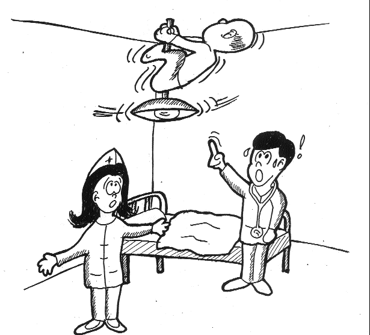

| Maître et disciples racontent des blagues |
Blagues par les initiés de Los Angeles, États-Unis (initialement en Au lacien) |
 Dans un hôpital pour déficients mentaux, en entrant dans la chambre d'un patient, le médecin l'aperçut suspendu au plafond. Apeuré, il appela l'infirmière afin qu'elle l'aide à le redescendre de peur qu'il se tue en tombant. L'infirmière dit : "docteur, tous les jours, ce patient se prend pour une lampe, c'est pourquoi il se suspend au plafond."
Le docteur dit : "non, vous devez le faire redescendre pour de bon, car s'il tombe, il se tuera."
Au bout d'un moment, l'infirmière répondit : "mais s'il redescend, la lumière s'éteindra."